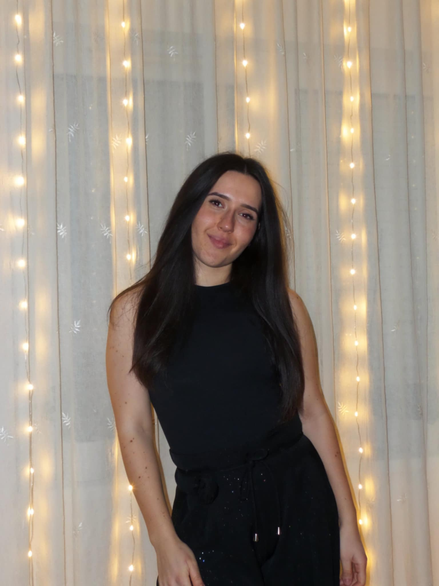
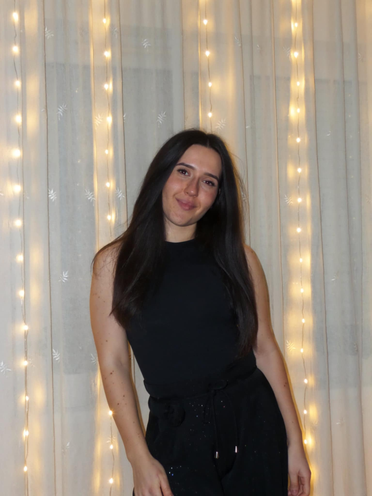

Név: Bancsics Eszter
Üdvözletem, Eszti vagyok, harmadéves gazdaságinformatikus hallgató. Legtöbb esetben flegma fejjel láthattok az Irinyi területén, pedig nincs különösebb bajom senkivel/semmivel (kivéve azokat a tárgyakat amiknek a nevében a programozás található). Ha épp nem Szegeden gondolkodom azon, hogy mit is keresek én itt, általában terepen száguldozom otthon legkedvesebb lóállatommal, aminél általában a túlélési esélyeim számolom.
 
